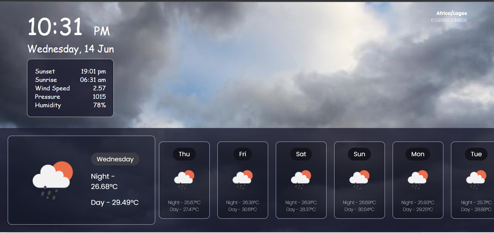

Welcome to
KIN'S WEATHER FORECAST
A program that uses Open Weather API to give weather report of your location.
KIN'S Weather forecasting is a projet which uses Open Weather Api to give weather report of your location. Weather forecast is the process of predicting the atmospheric conditions and weather patterns for a specific location over a given time frame. It involves analyzing various meteorological data and using mathematical models to make predictions about future weather conditions.